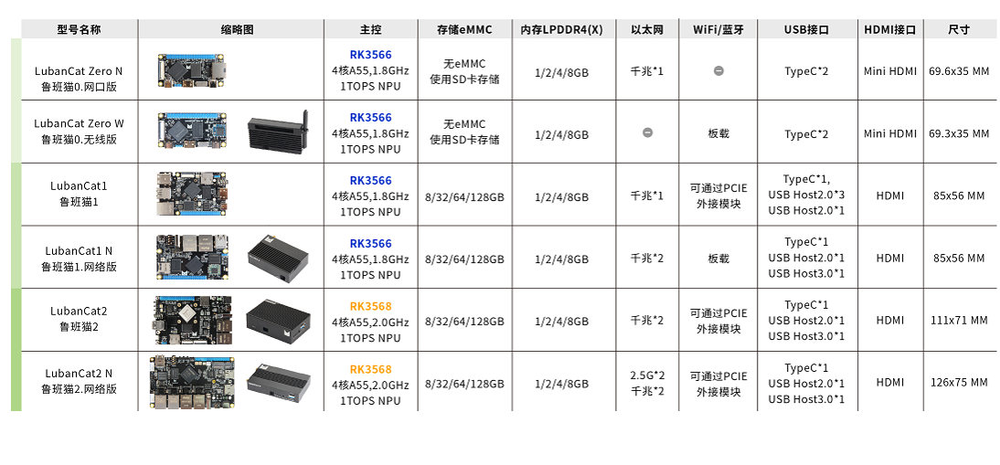
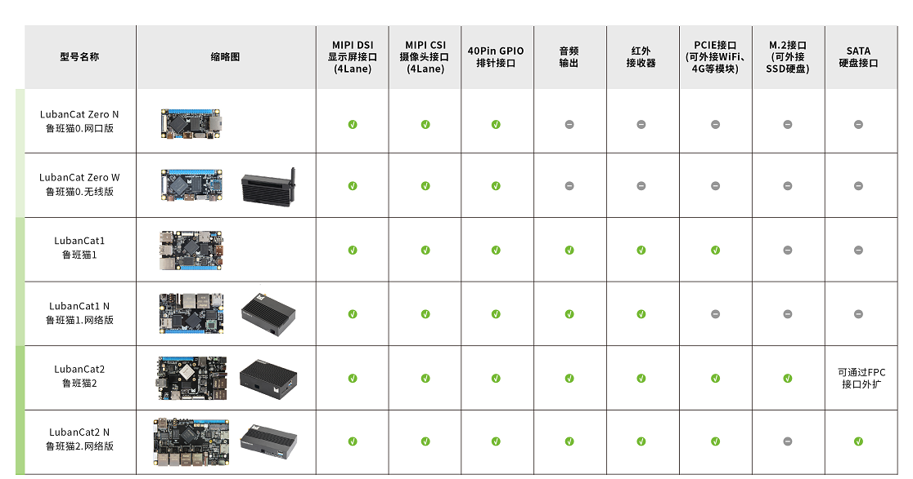
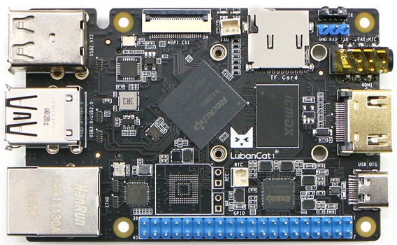
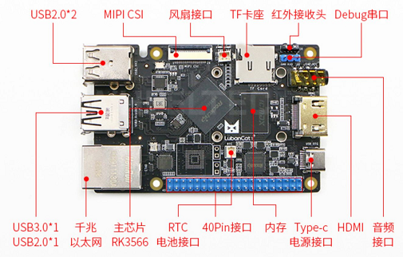
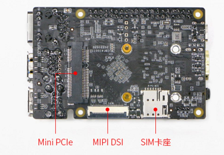

<!DOCTYPE lake>
<h1 data-lake-id="D3vK0" id="D3vK0"><span data-lake-id="ue41eebfe" id="ue41eebfe">鲁班猫介绍</span></h1><p data-lake-id="u0a56a28a" id="u0a56a28a"></p><p data-lake-id="ub642b93b" id="ub642b93b"><span class="lake-fontsize-12" data-lake-id="uf82946e9" id="uf82946e9" style="color: rgb(64, 64, 64); background-color: rgb(252, 252, 252)">鲁班猫-瑞芯微（LubanCat-RK）系列则是野火基于瑞芯微（Rockchip）高性能处理器开发的系列卡片电脑。凭借它优越的性能以及多产品线覆盖教育、商业应用、工业控制等领域，具备广泛的应用场景：</span></p><ul list="u83c32f5e"><li data-lake-id="uf966111e" fid="u1ea5b8cf" id="uf966111e"><span class="lake-fontsize-12" data-lake-id="ub8b03fe5" id="ub8b03fe5" style="color: rgb(64, 64, 64); background-color: rgb(252, 252, 252)">卡片电脑：办公、编程开发，家庭娱乐、编程教育等</span></li><li data-lake-id="uc939c7ef" fid="u1ea5b8cf" id="uc939c7ef"><span class="lake-fontsize-12" data-lake-id="u2c2e2a0a" id="u2c2e2a0a" style="color: rgb(64, 64, 64); background-color: rgb(252, 252, 252)">Linux服务器：私有云、软路由、NAS、个人WEB服务器等</span></li><li data-lake-id="ufb3983ab" fid="u1ea5b8cf" id="ufb3983ab"><span class="lake-fontsize-12" data-lake-id="u005eac51" id="u005eac51" style="color: rgb(64, 64, 64); background-color: rgb(252, 252, 252)">家庭智能化中枢：电视盒子、智能家居控制、传感器数据分析、安防监控等</span></li><li data-lake-id="ue04eefe1" fid="u1ea5b8cf" id="ue04eefe1"><span class="lake-fontsize-12" data-lake-id="u06c8a457" id="u06c8a457" style="color: rgb(64, 64, 64); background-color: rgb(252, 252, 252)">工业化：电子广告牌、自动售卖机、机器人、无人机等</span></li><li data-lake-id="ubeb0ed09" fid="u1ea5b8cf" id="ubeb0ed09"><span class="lake-fontsize-12" data-lake-id="u1d14a098" id="u1d14a098" style="color: rgb(64, 64, 64); background-color: rgb(252, 252, 252)">嵌入式开发板：加速嵌入式项目验证及开发</span></li></ul><h1 data-lake-id="aFLcO" id="aFLcO"><span data-lake-id="uea04dcb4" id="uea04dcb4" style="color: rgb(64, 64, 64); background-color: rgb(252, 252, 252)">鲁班猫系列</span></h1><p data-lake-id="ue842175b" id="ue842175b"><span class="lake-fontsize-12" data-lake-id="u8d844d0a" id="u8d844d0a" style="color: rgb(64, 64, 64); background-color: rgb(252, 252, 252)">LubanCat-RK系列包含三个子系列，使用RK3566/RK3568主芯片搭配不同外设来面对不同的使用需求。</span></p><p data-lake-id="u6eab2345" id="u6eab2345"></p><p data-lake-id="ufd39a6fc" id="ufd39a6fc"></p><h1 data-lake-id="A0wkw" id="A0wkw"><span data-lake-id="u56072cd0" id="u56072cd0">lubancat-1s</span></h1><p data-lake-id="u073ff3d1" id="u073ff3d1"></p><p data-lake-id="ud72fc8e1" id="ud72fc8e1"><span class="lake-fontsize-12" data-lake-id="u3fe68b04" id="u3fe68b04" style="color: rgb(64, 64, 64); background-color: rgb(252, 252, 252)">LubanCat-1S使用了一颗包含四核Cortex-A55处理器、Mali G52 2EE图形处理器和高能效NPU的SOC， 搭配千兆网口、HDMI、USB3.0、MINI PCI-E、MIPI等外设。在引出高使用率高接口的同时删减了部分使用率较低的接口和外设， 使其性价比得到显著提升，而预留的USB、MINI PCI-E等通用接口，又进一步扩大了板卡的使用场景。</span></p><p data-lake-id="u48ebff2d" id="u48ebff2d"><span class="lake-fontsize-12" data-lake-id="u83376fe5" id="u83376fe5" style="color: rgb(64, 64, 64); background-color: rgb(252, 252, 252)">这使得LubanCat-1S不仅能作为高性能单板电脑来使用，还可以作为嵌入式主板，用于显示、控制、网络传输等多种场景。</span></p><p data-lake-id="ud97a0045" id="ud97a0045"><strong><span class="lake-fontsize-12" data-lake-id="uafe3be91" id="uafe3be91" style="color: rgb(64, 64, 64); background-color: rgb(252, 252, 252)">硬件资源</span></strong></p><p data-lake-id="ub25f8b02" id="ub25f8b02"></p><p data-lake-id="u309dffba" id="u309dffba"></p><p data-lake-id="u8d6a654d" id="u8d6a654d"><span data-lake-id="u2733610c" id="u2733610c">硬件资源表</span></p><table class="lake-table" data-lake-id="zlyKF" id="zlyKF" style="width: 750px"><colgroup><col width="375"/><col width="375"/></colgroup><tbody><tr data-lake-id="ufed4fcdf" id="ufed4fcdf"><td data-lake-id="udcba799f" id="udcba799f" style="background-color: rgb(243, 246, 246)"><p data-lake-id="ue5fda562" id="ue5fda562"><span class="lake-fontsize-11" data-lake-id="u942f3b27" id="u942f3b27" style="color: rgb(64, 64, 64)">板卡名称</span></p></td><td data-lake-id="u3faf2971" id="u3faf2971" style="background-color: rgb(243, 246, 246)"><p data-lake-id="u9854780a" id="u9854780a"><span class="lake-fontsize-11" data-lake-id="u5eb24aac" id="u5eb24aac" style="color: rgb(64, 64, 64)">LubanCat-1S</span></p></td></tr><tr data-lake-id="u519fa88b" id="u519fa88b"><td data-lake-id="u31f10e8c" id="u31f10e8c" style="background-color: rgb(252, 252, 252)"><p data-lake-id="ue0b79328" id="ue0b79328"><span class="lake-fontsize-11" data-lake-id="u48ad7bd1" id="u48ad7bd1" style="color: rgb(64, 64, 64)">电源接口</span></p></td><td data-lake-id="u4e79d6de" id="u4e79d6de" style="background-color: rgb(252, 252, 252)"><p data-lake-id="u514bcee6" id="u514bcee6"><span class="lake-fontsize-11" data-lake-id="u560fb80a" id="u560fb80a" style="color: rgb(64, 64, 64)">Type-C_5V@3A直流输入/下载接口</span></p></td></tr><tr data-lake-id="u6321c8b6" id="u6321c8b6"><td data-lake-id="u17d7b124" id="u17d7b124" style="background-color: rgb(243, 246, 246)"><p data-lake-id="u783067db" id="u783067db"><span class="lake-fontsize-11" data-lake-id="u20ed4a42" id="u20ed4a42" style="color: rgb(64, 64, 64)">主芯片</span></p></td><td data-lake-id="udb869bf4" id="udb869bf4" style="background-color: rgb(243, 246, 246)"><p data-lake-id="u62c2627a" id="u62c2627a"><span class="lake-fontsize-11" data-lake-id="u986fc4f9" id="u986fc4f9" style="color: rgb(64, 64, 64)">RK3566(四核Cortex-A55、1.8GHz、Mali-G52)</span></p></td></tr><tr data-lake-id="ud848cc81" id="ud848cc81"><td data-lake-id="u6447ffbe" id="u6447ffbe" style="background-color: rgb(252, 252, 252)"><p data-lake-id="uebd9d44e" id="uebd9d44e"><span class="lake-fontsize-11" data-lake-id="u6415a1a2" id="u6415a1a2" style="color: rgb(64, 64, 64)">内存</span></p></td><td data-lake-id="u4cfc7584" id="u4cfc7584" style="background-color: rgb(252, 252, 252)"><p data-lake-id="u5579ef3a" id="u5579ef3a"><span class="lake-fontsize-11" data-lake-id="ue3c47faf" id="ue3c47faf" style="color: rgb(64, 64, 64)">LPDDR4/4X-1/2/4/8GB</span></p></td></tr><tr data-lake-id="u8c1527d3" id="u8c1527d3"><td data-lake-id="u9f0c231d" id="u9f0c231d" style="background-color: rgb(243, 246, 246)"><p data-lake-id="ua1605a6b" id="ua1605a6b"><span class="lake-fontsize-11" data-lake-id="u41cb369a" id="u41cb369a" style="color: rgb(64, 64, 64)">存储</span></p></td><td data-lake-id="u99767ff4" id="u99767ff4" style="background-color: rgb(243, 246, 246)"><p data-lake-id="ubbc265a3" id="ubbc265a3"><span class="lake-fontsize-11" data-lake-id="ud3e6e0e9" id="ud3e6e0e9" style="color: rgb(64, 64, 64)">无eMMC,仅支持SD卡</span></p></td></tr><tr data-lake-id="u588c3a45" id="u588c3a45"><td data-lake-id="u34471326" id="u34471326" style="background-color: rgb(252, 252, 252)"><p data-lake-id="uf8fe8316" id="uf8fe8316"><span class="lake-fontsize-11" data-lake-id="u49cb37fd" id="u49cb37fd" style="color: rgb(64, 64, 64)">以太网</span></p></td><td data-lake-id="u5a4f6007" id="u5a4f6007" style="background-color: rgb(252, 252, 252)"><p data-lake-id="u92697541" id="u92697541"><span class="lake-fontsize-11" data-lake-id="u303eea45" id="u303eea45" style="color: rgb(64, 64, 64)">10/100/1000M自适应以太网口x1</span></p></td></tr><tr data-lake-id="ub5785c1a" id="ub5785c1a"><td data-lake-id="ue4548f4a" id="ue4548f4a" style="background-color: rgb(243, 246, 246)"><p data-lake-id="ud4274cf6" id="ud4274cf6"><span class="lake-fontsize-11" data-lake-id="u5b3540b3" id="u5b3540b3" style="color: rgb(64, 64, 64)">USB2.0</span></p></td><td data-lake-id="u3db78adf" id="u3db78adf" style="background-color: rgb(243, 246, 246)"><p data-lake-id="u63e9573d" id="u63e9573d"><span class="lake-fontsize-11" data-lake-id="u5b275ccf" id="u5b275ccf" style="color: rgb(64, 64, 64)">Type-A接口x3(HOST)</span></p></td></tr><tr data-lake-id="u99128b5b" id="u99128b5b"><td data-lake-id="u0491897d" id="u0491897d" style="background-color: rgb(252, 252, 252)"><p data-lake-id="ue81f6f7b" id="ue81f6f7b"><span class="lake-fontsize-11" data-lake-id="u08e851fe" id="u08e851fe" style="color: rgb(64, 64, 64)">USB2.0</span></p></td><td data-lake-id="u9afa0585" id="u9afa0585" style="background-color: rgb(252, 252, 252)"><p data-lake-id="u3d4d66be" id="u3d4d66be"><span class="lake-fontsize-11" data-lake-id="u1a82976b" id="u1a82976b" style="color: rgb(64, 64, 64)">Type-C接口x1(OTG)，固件烧录接口，与电源接口共用</span></p></td></tr><tr data-lake-id="u3a37354f" id="u3a37354f"><td data-lake-id="u9572aaf1" id="u9572aaf1" style="background-color: rgb(243, 246, 246)"><p data-lake-id="u025440f6" id="u025440f6"><span class="lake-fontsize-11" data-lake-id="ua90e8d82" id="ua90e8d82" style="color: rgb(64, 64, 64)">USB3.0</span></p></td><td data-lake-id="u9fb42b3f" id="u9fb42b3f" style="background-color: rgb(243, 246, 246)"><p data-lake-id="u7ac86b76" id="u7ac86b76"><span class="lake-fontsize-11" data-lake-id="u3d789125" id="u3d789125" style="color: rgb(64, 64, 64)">Type-A接口x1(HOST)</span></p></td></tr><tr data-lake-id="u0b73cc7c" id="u0b73cc7c"><td data-lake-id="uca6015c4" id="uca6015c4" style="background-color: rgb(252, 252, 252)"><p data-lake-id="u38426c4d" id="u38426c4d"><span class="lake-fontsize-11" data-lake-id="u9645a263" id="u9645a263" style="color: rgb(64, 64, 64)">Debug串口</span></p></td><td data-lake-id="u702bd797" id="u702bd797" style="background-color: rgb(252, 252, 252)"><p data-lake-id="ueebf273e" id="ueebf273e"><span class="lake-fontsize-11" data-lake-id="ud0acbc9f" id="ud0acbc9f" style="color: rgb(64, 64, 64)">一路Debug串口，默认参数1500000-8-N-1</span></p></td></tr><tr data-lake-id="ub62aaac6" id="ub62aaac6"><td data-lake-id="u41eb65a5" id="u41eb65a5" style="background-color: rgb(243, 246, 246)"><p data-lake-id="u212ec6ae" id="u212ec6ae"><span class="lake-fontsize-11" data-lake-id="ube5650da" id="ube5650da" style="color: rgb(64, 64, 64)">短接跳线</span></p></td><td data-lake-id="u40ece8a2" id="u40ece8a2" style="background-color: rgb(243, 246, 246)"><p data-lake-id="u8374d872" id="u8374d872"><span class="lake-fontsize-11" data-lake-id="ua2da43a3" id="ua2da43a3" style="color: rgb(64, 64, 64)">MR(MaskRom)、REC(Recovery)</span></p></td></tr><tr data-lake-id="ubfaaacbf" id="ubfaaacbf"><td data-lake-id="u958bc68d" id="u958bc68d" style="background-color: rgb(252, 252, 252)"><p data-lake-id="u41f7f6f9" id="u41f7f6f9"><span class="lake-fontsize-11" data-lake-id="u547e1ca3" id="u547e1ca3" style="color: rgb(64, 64, 64)">音频接口</span></p></td><td data-lake-id="u07ca8608" id="u07ca8608" style="background-color: rgb(252, 252, 252)"><p data-lake-id="u47db0a42" id="u47db0a42"><span class="lake-fontsize-11" data-lake-id="ue558e7f6" id="ue558e7f6" style="color: rgb(64, 64, 64)">耳机输出+麦克风输入2合1接口</span></p></td></tr><tr data-lake-id="u1f97a046" id="u1f97a046"><td data-lake-id="uafeccbb7" id="uafeccbb7" style="background-color: rgb(243, 246, 246)"><p data-lake-id="u23622e80" id="u23622e80"><span class="lake-fontsize-11" data-lake-id="u58826881" id="u58826881" style="color: rgb(64, 64, 64)">40Pin接口</span></p></td><td data-lake-id="u76ebace3" id="u76ebace3" style="background-color: rgb(243, 246, 246)"><p data-lake-id="u116e65a4" id="u116e65a4"><span class="lake-fontsize-11" data-lake-id="u808f81ed" id="u808f81ed" style="color: rgb(64, 64, 64)">兼容树莓派40Pin接口，支持PWM,GPIO,I2C,SPI,UART功能</span></p></td></tr><tr data-lake-id="u829e5cf3" id="u829e5cf3"><td data-lake-id="u00b71dfb" id="u00b71dfb" style="background-color: rgb(252, 252, 252)"><p data-lake-id="uf7d522ce" id="uf7d522ce"><span class="lake-fontsize-11" data-lake-id="u28b899a5" id="u28b899a5" style="color: rgb(64, 64, 64)">MINI-PCIE</span></p></td><td data-lake-id="u81736699" id="u81736699" style="background-color: rgb(252, 252, 252)"><p data-lake-id="ud2616f73" id="ud2616f73"><span class="lake-fontsize-11" data-lake-id="udc990cf5" id="udc990cf5" style="color: rgb(64, 64, 64)">可配合全高或半高的WIFI网卡、4G模块或其他MINI-PCIE接口模块使用</span></p></td></tr><tr data-lake-id="ub159d209" id="ub159d209"><td data-lake-id="ude8d83cb" id="ude8d83cb" style="background-color: rgb(243, 246, 246)"><p data-lake-id="ufa75d1ea" id="ufa75d1ea"><span class="lake-fontsize-11" data-lake-id="u4db754a3" id="u4db754a3" style="color: rgb(64, 64, 64)">SIM卡接口</span></p></td><td data-lake-id="u9e934a2d" id="u9e934a2d" style="background-color: rgb(243, 246, 246)"><p data-lake-id="uf3432cef" id="uf3432cef"><span class="lake-fontsize-11" data-lake-id="u53211689" id="u53211689" style="color: rgb(64, 64, 64)">搭配4G模块使用</span></p></td></tr><tr data-lake-id="uc059e977" id="uc059e977"><td data-lake-id="u9c3a905c" id="u9c3a905c" style="background-color: rgb(252, 252, 252)"><p data-lake-id="u11d0f924" id="u11d0f924"><span class="lake-fontsize-11" data-lake-id="ua93538aa" id="ua93538aa" style="color: rgb(64, 64, 64)">HDMI2.0</span></p></td><td data-lake-id="u1ff72966" id="u1ff72966" style="background-color: rgb(252, 252, 252)"><p data-lake-id="ue8bc38f2" id="ue8bc38f2"><span class="lake-fontsize-11" data-lake-id="u36c1a7d4" id="u36c1a7d4" style="color: rgb(64, 64, 64)">显示器接口</span></p></td></tr><tr data-lake-id="ub8bd33c4" id="ub8bd33c4"><td data-lake-id="u11287495" id="u11287495" style="background-color: rgb(243, 246, 246)"><p data-lake-id="ud7e68675" id="ud7e68675"><span class="lake-fontsize-11" data-lake-id="u7d49c18b" id="u7d49c18b" style="color: rgb(64, 64, 64)">MIPI-DSI</span></p></td><td data-lake-id="u965f282e" id="u965f282e" style="background-color: rgb(243, 246, 246)"><p data-lake-id="u5f3b08ee" id="u5f3b08ee"><span class="lake-fontsize-11" data-lake-id="ua37ce012" id="ua37ce012" style="color: rgb(64, 64, 64)">MIPI屏幕接口</span></p></td></tr><tr data-lake-id="u84abfe29" id="u84abfe29"><td data-lake-id="ud3183f44" id="ud3183f44" style="background-color: rgb(252, 252, 252)"><p data-lake-id="uea83d227" id="uea83d227"><span class="lake-fontsize-11" data-lake-id="u14c35019" id="u14c35019" style="color: rgb(64, 64, 64)">MIPI-CSI</span></p></td><td data-lake-id="uf06e4da3" id="uf06e4da3" style="background-color: rgb(252, 252, 252)"><p data-lake-id="ubf354e52" id="ubf354e52"><span class="lake-fontsize-11" data-lake-id="uabdf5b88" id="uabdf5b88" style="color: rgb(64, 64, 64)">摄像头接口</span></p></td></tr><tr data-lake-id="u536b48cc" id="u536b48cc"><td data-lake-id="u0a38800f" id="u0a38800f" style="background-color: rgb(243, 246, 246)"><p data-lake-id="u00af3320" id="u00af3320"><span class="lake-fontsize-11" data-lake-id="u04947024" id="u04947024" style="color: rgb(64, 64, 64)">红外接收</span></p></td><td data-lake-id="u5da95c84" id="u5da95c84" style="background-color: rgb(243, 246, 246)"><p data-lake-id="uf1631c82" id="uf1631c82"><span class="lake-fontsize-11" data-lake-id="uf4ecdd5f" id="uf4ecdd5f" style="color: rgb(64, 64, 64)">支持红外遥控</span></p></td></tr><tr data-lake-id="u13f0b6d3" id="u13f0b6d3"><td data-lake-id="u4213f48a" id="u4213f48a" style="background-color: rgb(252, 252, 252)"><p data-lake-id="u50d7b707" id="u50d7b707"><span class="lake-fontsize-11" data-lake-id="u83e93707" id="u83e93707" style="color: rgb(64, 64, 64)">TF卡座</span></p></td><td data-lake-id="u0f419acb" id="u0f419acb" style="background-color: rgb(252, 252, 252)"><p data-lake-id="u40abc7b1" id="u40abc7b1"><span class="lake-fontsize-11" data-lake-id="ubb4aedfb" id="ubb4aedfb" style="color: rgb(64, 64, 64)">支持TF卡启动系统，最高支持512GB</span></p></td></tr><tr data-lake-id="uba07478b" id="uba07478b"><td data-lake-id="uadfc66c7" id="uadfc66c7" style="background-color: rgb(243, 246, 246)"><p data-lake-id="uea78e7f4" id="uea78e7f4"><span class="lake-fontsize-11" data-lake-id="u74ce78b4" id="u74ce78b4" style="color: rgb(64, 64, 64)">风扇接口</span></p></td><td data-lake-id="u39cb2649" id="u39cb2649" style="background-color: rgb(243, 246, 246)"><p data-lake-id="u4baee75b" id="u4baee75b"><span class="lake-fontsize-11" data-lake-id="u70d4f6cb" id="u70d4f6cb" style="color: rgb(64, 64, 64)">支持安装风扇散热</span></p></td></tr><tr data-lake-id="u83ce2a03" id="u83ce2a03"><td data-lake-id="u74113019" id="u74113019" style="background-color: rgb(252, 252, 252)"><p data-lake-id="ub60ae434" id="ub60ae434"><span class="lake-fontsize-11" data-lake-id="uff935ae7" id="uff935ae7" style="color: rgb(64, 64, 64)">RTC接口</span></p></td><td data-lake-id="u4259ede0" id="u4259ede0" style="background-color: rgb(252, 252, 252)"><p data-lake-id="u749b2df9" id="u749b2df9"><span class="lake-fontsize-11" data-lake-id="u374b65eb" id="u374b65eb" style="color: rgb(64, 64, 64)">支持RTC功能</span></p></td></tr></tbody></table><p data-lake-id="u9d89586c" id="u9d89586c"><br/></p><p data-lake-id="u222ac3f1" id="u222ac3f1"><span data-lake-id="u4b471f56" id="u4b471f56">​</span><br/></p>